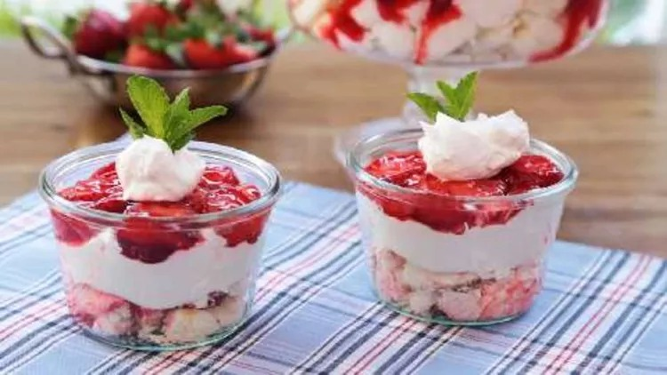

How to Make the Best Dessert

Description
Light and fluffy, the perfect treat to end your meal. Glazed strawberries, angel food cake, and a sweet creamy topping are layered in this colorful, chilled dessert.
Ingredients:
- Angel Food Cake
- Cream Cheese
- White Sugar
- Whipped Topping
- Fresh Strawberries
- Strawberry Glaze
Steps:
- Crumble or cut cake into bite-sized pieces. Arrange in a 9x13-inch dish; press cake down to form a layer.
- Beat cream cheese and sugar in a medium bowl until light and fluffy. Fold in whipped topping; spread cream cheese mixture over cake layer.
- Combine strawberries and glaze in a bowl until strawberries are evenly coated. Spread over cream cheese layer. Chill until serving.